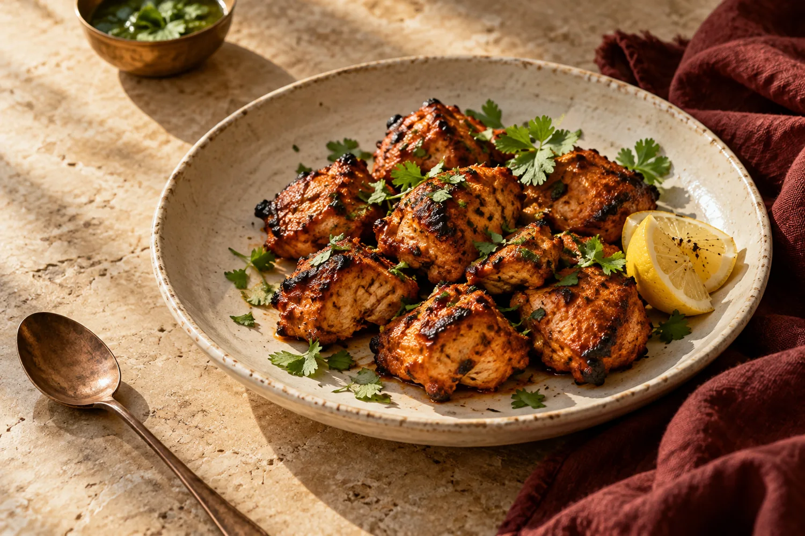

INDIAN CUISINE · COLUMBUS, GEORGIA
A little Bombay.
A little closer.
A warm invitation to explore Indian cuisine, right here on Macon Road.
4213 Macon RdColumbus, GA 31907
A world of flavor, a little closer
02 / DISCOVER THE FLAVORS
A world of flavor.
Find your way in.
Familiar favorites or a first taste of something new. Take a closer look at the aromas and little details of Indian cooking.
Explore the menuTake a moment with the spice cabinet. Select a spice to discover a different side of Indian flavor.
THE SPICE CABINET
Cardamom
Floral · fragrant · bright
A small pod with a beautifully aromatic personality. An invitation to explore the fragrant side of Indian cooking.
An introduction to Indian spices. Botanical illustrations, not a recipe or ingredient list for the restaurant.
03 / COME SAY HELLO
Your table starts
on Macon Road.
Find us in Columbus, Georgia.
FIND BOMBAY PALACE
4213 Macon Rd
Columbus, GA 31907
Get directions in Google Maps Directions use the supplied street address.
A few details are still coming together.
Restaurant hours, contact details, menu availability, and ordering options are awaiting confirmation.